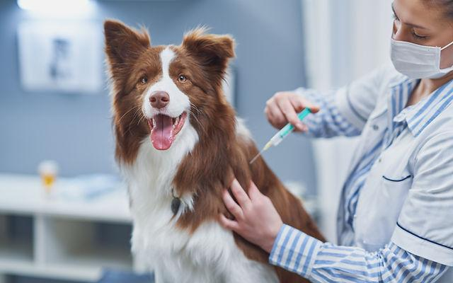

ATENDIMENTO
Consultas veterinárias
Acompanhamento individualizado para conhecer a saúde e as necessidades do seu pet.
Saiba maisSeu melhor amigo merece atenção de verdade. Um espaço pensado para acolher cães, gatos e as pessoas que mais os amam.

AcolhimentoPara tutores e pets
Atenção individualCada animal é único
Bem-estarCuidado em todas as fases
Ambiente tranquiloConforto em primeiro lugar

A Clínica Veterinária Fulcher nasceu como um projeto de futuro: imaginar um espaço onde conhecimento, responsabilidade e sensibilidade caminham juntos.
Nosso conceito valoriza o vínculo entre pessoas e animais, com atendimento atencioso e uma experiência mais leve para toda a família.
Conheça nosso jeito de cuidarServiços apresentados de forma ilustrativa para mostrar como seria o atendimento de uma futura clínica veterinária.
Acompanhamento individualizado para conhecer a saúde e as necessidades do seu pet.
Saiba mais
Orientações e cuidados preventivos para acompanhar cada etapa da vida do animal.
Saiba maisUma proposta de acompanhamento cuidadoso para apoiar decisões sobre o bem-estar dos pets.
Saiba maisAcreditamos que a experiência do pet começa antes mesmo da consulta. Por isso, imaginamos cada etapa com tranquilidade, respeito e proximidade.
Entre em contatoUm ambiente pensado para receber cada família com calma.
Tempo para entender a rotina e as necessidades de cada animal.
Explicações acessíveis para que os tutores participem do cuidado.
Estas informações fazem parte de uma demonstração de como a clínica poderia se comunicar com seus futuros clientes.
Não. Este é um projeto fictício de portfólio, criado para demonstrar uma possível identidade e presença digital para uma clínica veterinária futura.
O formulário é demonstrativo. Ele pode preparar uma mensagem para WhatsApp quando um número autorizado for configurado no JavaScript, mas não realiza agendamentos reais.
O conceito visual e os serviços apresentados são voltados principalmente a cães e gatos.
Ainda não existe endereço comercial. A localização será definida apenas se o projeto se tornar um negócio real.
Este formulário demonstra uma futura solicitação de contato. Nenhuma mensagem é enviada a um servidor.